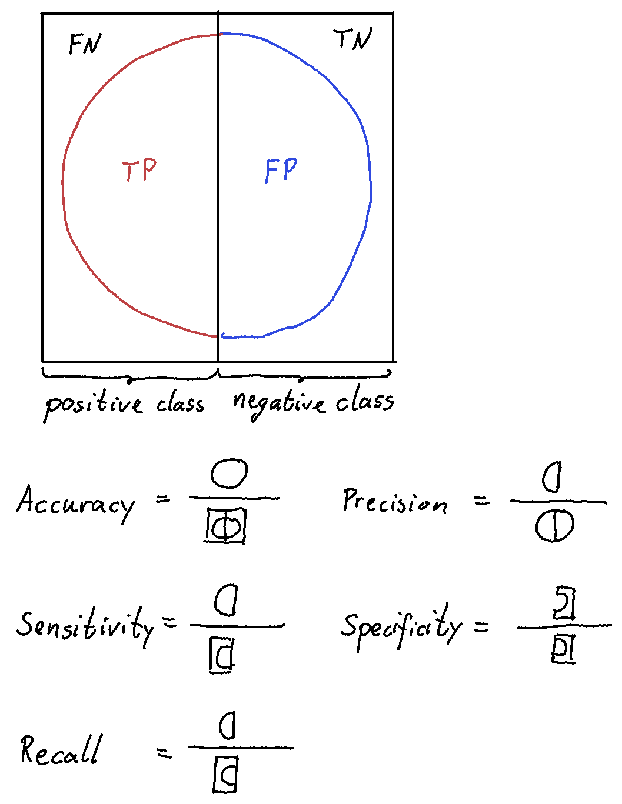
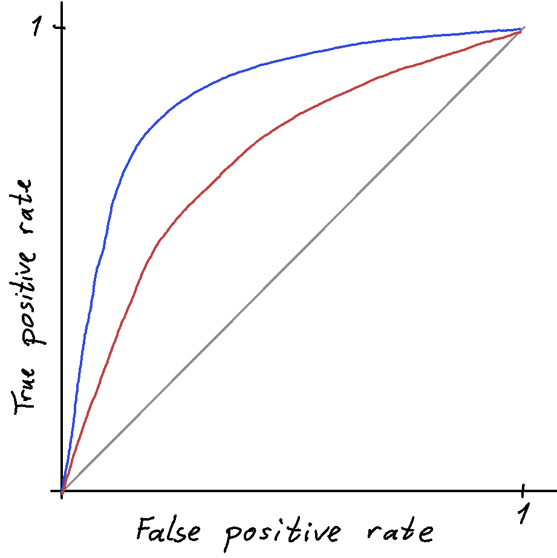
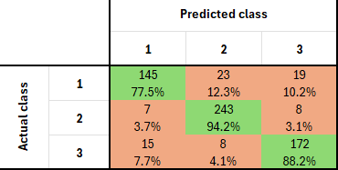

Evaluation metrics
Before discussing how to chose an appropriate metric for the problem at hand, let’s start by defining the most commonly used metrics for classification and regression problems, respectively.
Metrics for binary classification
An ML model typically gives out a score for each instance which is the basis for the classification. Often this score is normalised to be in the range [0,1] where we take numbers closer to 0 to mean classified as belonging to the negative class, and numbers closer to 1 mean classified as belonging to the positive class. Often, but not necessarily, the threshold is placed at 0.5.
Confusion matrix
The most commonly used metrics for classification are based on the confusion matrix. The confusion matrix for binary classification is a \(2\times 2\) matrix categorising the classified events as:
- True positive (TP) if the instance was classified as belonging to the positive class and this was correct.
- True negative (TN) if the instance was classified as belonging to the negative class and this was correct.
- False positive (FP) if the instance was classified as belonging to the positive class and this was incorrect.
- False negative (FN) if the instance was classified as belonging to the negative class and this was incorrect.
There is no universally adopted convention for whether rows or columns should present the actual value, so it is important that the axes on the confusion matrix are labelled.

The numbers in the confusion matrix may be presented in different ways: Commonly the absolute numbers for each category is presented, but it is often beneficial to also include relative numbers. The normalisation of the relative numbers may differ, so pay attention! The numbers for all of the matrix may sum to 1, or each row or column may sum to 1.

Scalar metrics
Based on the numbers from the confusion matrix, we can define several scalars which are measures of performance. Since we are reducing the \(2\times2\) matrix into a scalar, some information is necessarily lost. With an appropriate choice of metric, this loss of information isn’t a problem, but choosing a metric which doesn’t fit the problem at hand will yield a misleading measure of performance.
- Accuracy is a measure of the fraction of correctly classified instances \[\text{Accuracy} = \frac{TP + TN}{P + N} = \frac{TP + TN}{TP + FP + TN + FN}\]
- Precision is a measure of how large a fraction classified as positive was correctly classified \[\text{Precision} = \frac{TP}{TP+FP}\]
- True positive rate (TPR), recall or sensitivity is a measure of how large a fraction of the positive class was correctly classified \[\text{TPR} = \frac{TP}{P} = \frac{TP}{TP + FN}\]
- True negative rate (TNR), Specificity is a measure of how large a fraction of the negative class was correctly classified \[\text{TNR} = \frac{TN}{N} = \frac{TN}{TN + FP}\]
- F1 score is the most commonly used member of a more general class of measures (F\(\beta\) score) and is defined as the harmonic mean of precision and recall \[\text{F}_1 = \left( \frac{\frac{1}{\text{precision}}+\frac{1}{\text{recall}}}{2}\right)^{-1} = 2\frac{\text{precision}\cdot\text{recall}}{\text{precision+recall}} = \frac{2TP}{2TP + FP + FN}\] By choosing \(\beta \neq 1\) one can give more weigth to either precision or recall \[\text{F}_\beta = (1+\beta^2)\frac{\text{precision}\cdot\text{recall}}{(\beta^2\cdot\text{precision)+recall}} = \frac{(1+\beta^2)TP}{(1+\beta^2)TP + FP + \beta^2FN}\]

Receiver operating characteristic (ROC) curve
By computing a single scalar as the above metrics are examples of, we discard a lot of information that may be useful for the user of the ML model. An alternative that preserves some of that information is the ROC curve. This is a plot of true postitive rate vs false positive rate.

The diagonal gray line is the ROC curve of blind guessing. The higher above the diagonal, the better - so in this example, the classifier represented by the blue curve is better than the classifier represented by the red curve. By presenting the performance of the classifier by an ROC curve, the user can choose “working point” according to their need - whether they need to prioritize a high true positive rate (retain a lot of the signal) or a low false positive rate (avoid a lot of background masking the signal).
By integrating the ROC one obtain the area under the (ROC) curve, referred to as AUC or AUROC, which is a scalar metric that may be used to compare the performance of two different classifieres. Note, however, that depending on the users requirement the classifier with the larger AUC may perform worse than the classifier with the smaller AUC. This can happen if the ROC curves of the two classifiers cross each other. E.g. one classifier may be best in most of the region and thus end up with the largest AUC, while still being outperformed in the a specific region such as very high positive rate.
Choosing a metric
All the above metrics are valid measures-of-goodness, but not all make sense in all cases. For a trivial example, consider precision. If this metric is used in the maintenance example from the utility section, the result would be very bad indeed. Since that metric prioritises a high purity among the instances classified as positive, but does not pay any regard to the instances classified as negative, a large false negative rate is likely. But this was exactly what needed to be avoided in this case, since a false negative would lead to a breakdown of the machinery and thus incur a large cost.
A slightly less obvious, but quite common and important, example of a bad choise of metric occurs when we have a large imbalance between the classes in the sample we want to classify. Say, positive class only constitute 1 permille of the total sample. If we use accuracy as our metric we would probably end up with a model that classifies all instances as negative, since this model would be 99.9% accurate. However, despite of the very high accuracy, the model is completely useless since none of the interesting instances are found.
Your task is to make a machine learning algorithm that will classify a large set of chemical compounds as being either good candidates for becoming a new medicine (positive) or uninteresting for medical use (negative). The selected compounds will be taken into further testing to prove or disprove their applicability as a medicine. Find suitable metrics in the given scenarios:
- Further testing is cheap, and the potential revenue of the new medicine is large.
- Further testing is expensive, and the potiential revenue of the new medicine is modest.
- Further testing is expensive, and the potenial revenue of the new medicine is large.
In a search for dark matter a large dataset is collected. The vast majority (possibly all) of the instances in the dataset does not contain a the signature for dark matter. Imagine making a machine learning algorithm tasked with finding instances which are candidates to being evidence of dark matter. Let an instance with a dark matter signature be the positive class. A successful algorithm should select a sample of instances with a large positive-to-negative ratio, but the sample should not be too small since this would mean that statistical fluctuations in the sampling degrades the result.
- Why is accuracy, precision and recall bad choises of metric in this scenario?
- Propose a good metric. Can one of the “standard metrics” be used, or would it be better to device a new one?
Metrics for multiclass classification
If there are more than two possible classes1 a generalisation of the discussion above is necessary. Again, the most used metrics are based on the confusion matrix, which now will be of dimension \(k\times k\) where \(k\) is the number of classes.

As before, the diagonal elements are the correctly classified ones. But now, an incorrectly classified element may have been classified wrong in several ways. This is useful information, since it can tell us which classes are harder or easier to separate. Starting from the confusion matrix we can define similar scalar metrics as for the binary case. For each of the \(k\) classes we calculate a \(2\times2\) confusion matrix based on the full confusion matrix:
\[ \begin{align} \text{TP}_i &= n_{ii} \\ \text{TN}_i &= \sum_{j\neq i} \sum_{h\neq j} n_{jh} \\ \text{FP}_i &= \sum_{j\neq i} n_{ji} \\ \text{FN}_i &= \sum_{j\neq i} n_{ij} \end{align} \] Using these definition we can for each class (\(i=1,2,\ldots,k\)) calculate accuracy, precision etc. To get an overall measure of the performance we need to average over the individual measures. Two options for averging procedure seems natural, and one have to choose the procedure that fits the problem at hand. With macro-averaging we calculate the arithmetic mean of all classes, \[ \text{Precision (macro)} = \frac{1}{k}\sum\text{Prescision}_i = \frac{1}{k}\sum\frac{\text{TP}_i}{\text{TP}_i + \text{FP}_i} \] Averaging this way, all classes are given equal weight.
The alternative, called micro-averaging, is to sum over all classes first and then calculate the metric: \[ \text{Precision (micro)} = \frac{\sum\text{TP}_i}{\sum\text{TP}_i + \sum\text{FP}_i} \] Averaging this way, classes with more instances are given more weight.
Metrics for regression
Metrics for regression are typically an aggregate of the deviation between model prediction and correct value for all instances in the data set used for evaluation. Since both predicting a too high and a too low value is undesirable, one need to apply a function such that both cases contribute with a positive number in the aggregated value. In order to make the metric independent of number of instances used in the evaluation, one typically use the mean deviation.
Let \(\hat{y}_i\) be the predicted value corresponding to correct value \(y_i\).
Mean squared error (MSE) is a mean of the squared deviations from the correct value \[\text{MSE} = \frac{1}{N}\sum_{i=1}^N (\hat{y}_i-y_i)^2\]
Root mean squared error (RMSE) is the square root of MSE \[\text{RMSE} = \sqrt{\text{MSE}} = \sqrt{\frac{1}{N}\sum_{i=1}^N (\hat{y}_i-y_i)^2}\]
Mean absolute error (MAE) is the mean of the absolute values of the deviations from the correct value \[\text{MAE} = \frac{1}{N}\sum_{i=1}^N |\hat{y}_i - y_i|\]
Choosing a metric
MSE and RMSE measure essentially the same thing, but there are nontheless important differences. MSE has the benefit that it is more easily differentiable, and is therefore a very good candidate for having the double use of both loss function and metric. RMSE, on the other hand, has - due to the square root after summing the squares - the same dimension as the input data. It is thus more easy to interpret what a particular value of RMSE means.
Assume that we have a regression model that predicts the height of a person based on age, weight, gender, place of birth etc. Evaluating the model on a small sample of persons yields the following results
| \(i\) | 1 | 2 | 3 | 4 | 5 | 6 | 7 | 8 | 9 | 10 |
|---|---|---|---|---|---|---|---|---|---|---|
| \(y_i\) (m) | 1.68 | 1.72 | 1.89 | 1.78 | 1.94 | 1.76 | 1.43 | 1.82 | 1.67 | 1.72 |
| \(\hat{y}_i\) (m) | 1.65 | 1.73 | 1.94 | 1.81 | 1.90 | 1.76 | 1.55 | 1.81 | 1.63 | 1.70 |
From this we can calculate \[ \text{MSE} = 2.25\cdot 10^{-3}~\mathrm{m}^2 \] \[ \text{RMSE} = 0.047~\mathrm{m}\] Both metrics give a valid measure of how well the model fits the data, but only RMSE give us immediate information about how large a deviation we should expect from the model.
MAE is an obvious metric to define since what we care about is the absolute value of the error, but since the absolute value function is not differentiable in \(x=0\) there are some numerical challenges in using it - which is part of the explanation why MSE or RMSE is more commonly preferred. A fact which may be a benefit compared to (R)MSE is that MAE is less sensitive to outliers. MAE has, as RMSE, the same dimension as the input data and is thus equally easy to interpret.
Using the same dataset as in the previous example, we calculate \[ \text{MAE} = 0.035~\mathrm{m}\] which, just as RMSE, can be interpreted as the “typical magnitude” of the deviations.
If we choose to throw away the largest deviation (\(i=7)\) as an outlier, we get the updated values \[\text{RMSE}' = 0.030~\mathrm{m}\] \[\text{MAE}' = 0.026~\mathrm{m}\] As expected, we se that RMSE change more than MAE when not including the outlier.
Footnotes
We limit ourselfs to discuss the case where each instance belong to a single class. If an instance may belong two different classes, e.g. image classification with more than one object in each image, we would refer to that as multilabel classification. This generalisation is not discussed here.↩︎